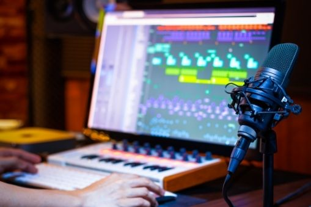

Mi nombre es LAUTARO, actualmente tengo 18 años, soy de SAN MARTIN PCIA DE BUENOS AIRES, actualmente estoy cursando el último año de secundaria teniendo como objetivo estudiar PROGRAMCION Y PRODUCCION MUSICAL que es lo que me apasiona hoy en dia.
Desde chico me gusto la produccion musical, me descargaba programas para hacer remix de electronica y beats de todo tipo, en ese momento no tenia todas las herramientas que tengo ahora, ni los conocimientos que tengo ahora.
Siempre me las rebusque para hacer lo que queria y llegar donde estoy, teniendo altos y bajos mis fortalezas me ayudaron un monton.
